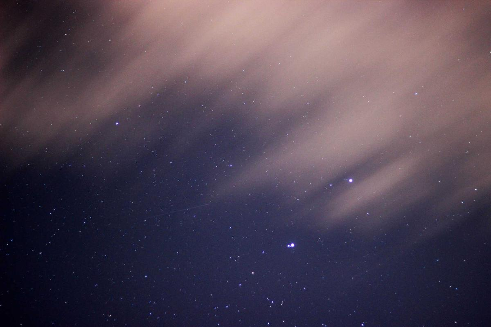
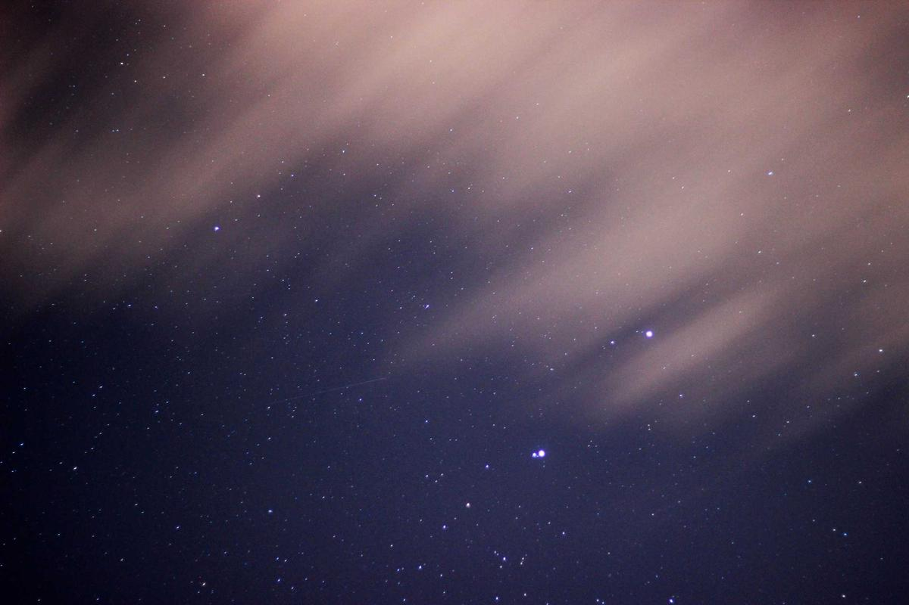
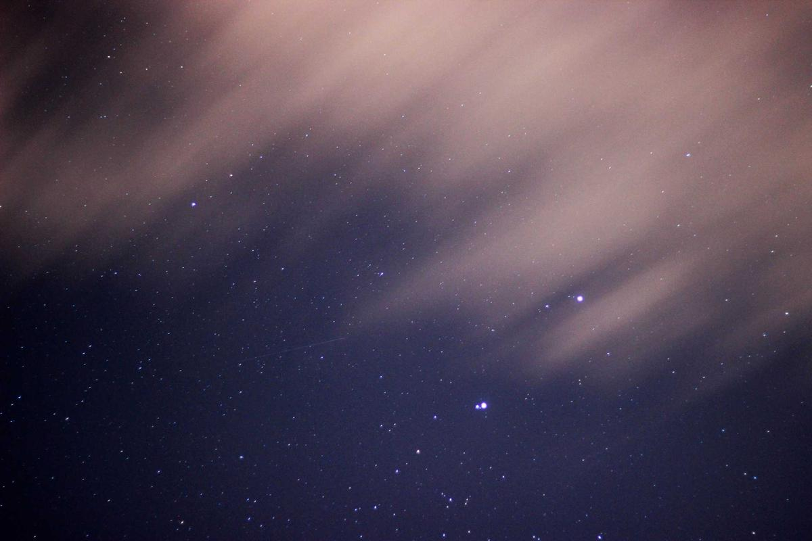

Phan Thiết
Mũi Né
Trung tâm du lịch biển nổi tiếng với cát, resort, làng chài và các hoạt động thể thao biển.
Bình Thuận là mảnh ghép du lịch biển của hành trình Lâm Đồng mở rộng, nổi bật với Mũi Né, Bàu Trắng, Hòn Rơm, Suối Tiên, tháp Chăm và các bãi đá ven biển có màu sắc rất riêng.
Nhóm này giúp trang Bình Thuận vừa có điểm nhấn cảnh quan, vừa có chiều sâu về văn hóa Chăm và trải nghiệm biển.
Trung tâm du lịch biển nổi tiếng với cát, resort, làng chài và các hoạt động thể thao biển.

Cồn cát trắng và hồ nước giữa sa mạc tạo nên một trong những cảnh quan nổi bật nhất.

Điểm ngắm biển, nghỉ dưỡng và chụp ảnh rất thuận tiện khi đi tuyến Mũi Né.

Con suối nhỏ với sắc màu đất cát đặc trưng, phù hợp đi bộ và chụp ảnh trải nghiệm.

Di tích văn hóa Chăm quan trọng, giúp trang có thêm lớp nội dung lịch sử và văn hóa.

Bãi đá ven biển đặc biệt, mang màu sắc địa chất rất khác biệt so với các khu vực khác.
Đây là khung tuyến cơ bản để triển khai thành bài khám phá biển, nghỉ dưỡng hoặc du lịch gia đình.
Ngắn gọn để người xem dễ lên kế hoạch trước khi đi biển.
Thời tiết nắng đẹp rất hợp cho biển và đồi cát. Nên đi sớm hoặc chiều muộn để tránh nắng gắt và có ảnh đẹp hơn.
Nên gom theo cụm Mũi Né - Hòn Rơm hoặc Bàu Trắng - Cổ Thạch để tiết kiệm thời gian và tối ưu trải nghiệm.
Phần này có thể mở rộng thành các trang chi tiết cho Mũi Né, Bàu Trắng, Hòn Rơm, Po Sah Inư và Cổ Thạch.